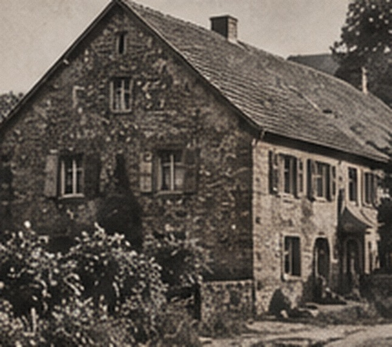
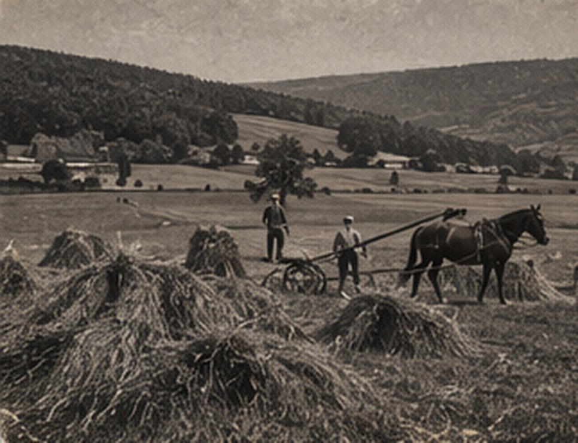

FAMILY PROFILE
Anamae Lezer Lauermann
18 October 1928 – 26 August 2026 · Sauk Rapids, Minnesota
A LIFE OF HER OWN
Work, church, and family.
Anamae was the daughter of Fred Lezer and Anna Grabinski. Her life in Sauk Rapids included work at the Dairy Bar, the Social Security office, and in manufacturing, as well as many years connected to Trinity Lutheran Church.

THE LEZER SISTERS
Growing up in Sauk Rapids.
Anamae
Born in 1928; married Edward Lauermann in 1950.
Dorothy L. Torell
Born at home in Sauk Rapids on 9 November 1930; married William A. Torell in 1952; died in 2020.
Gladys, Lorraine, Helen & Eleanor
The Lezer household also included Gladys Mendel, Lorraine Miller, Helen, who died in infancy, and Eleanor Doig.
LEZER / GRABINSKI ROOTS
From Sauk Rapids back toward East Prussia.
The family is tracing Fred Lezer and Anna Grabinski through U.S. records and then back to the Kurkau–Neidenburg area. Their exact European birthplaces and parents still need original civil or parish records.
Read the Lezer chapter